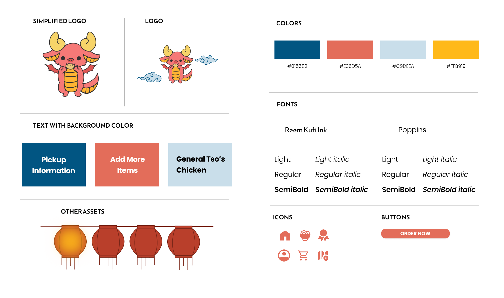
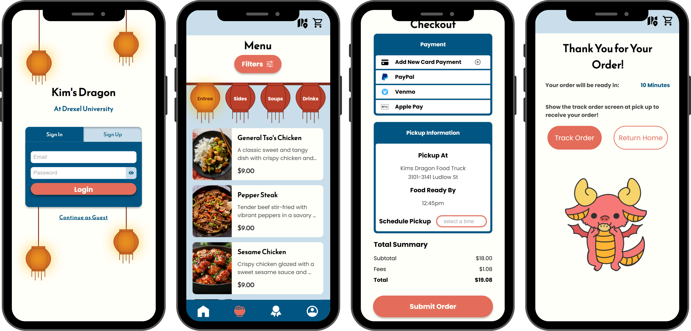
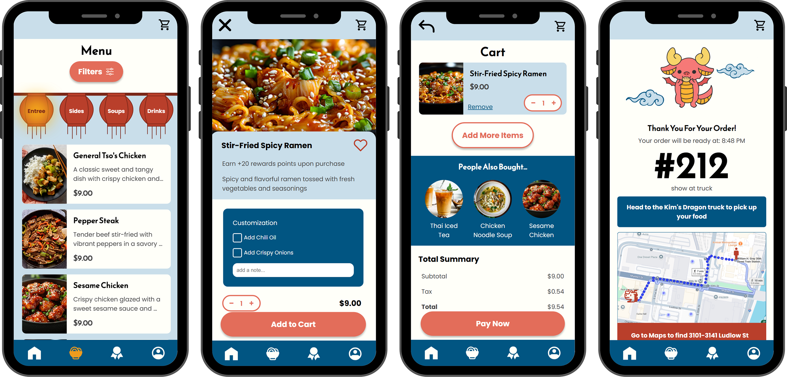

OVERVIEW
This project is an interaction design and development project to create a mobile ordering web application for a local food truck on the Drexel University campus. It was created for the class IDM 216, Interaction Design II, under the direction of Professor Jervis Thompson. Working on a team of 5 UXID students, we were tasked with delegating roles in project management, design, development, and data architecture to complete our web app for Kim’s Dragon. Over 10 a week period we transformed early-stage designs into a fully functional web application. Through multiple iterations informed by usability testing, we refined the user interface and backend functionality to create a seamless and efficient ordering system. My role as primary developer and secondary data architect involved front-end implementation, database structuring, and PHP integration to support dynamic menu browsing and order processing.
CONTEXT & CHALLENGE
PROJECT BACKGROUND
Kim's Dragon is a beloved Asian cuisine food truck located on Drexel University's campus. A favorite of students and local residents alike, it is found on a section of Ludlow Street referred to as “Food Truck Alley.” Working from designs created in IDM 215, Interaction Design I, the specific focus of this project was to develop a mobile ordering web application for the truck. Over the span of 10 weeks, I served as the primary developer and secondary data architect, working alongside my teammates to bring our application from concept to completion. The project operated within the constraints of academic guidelines, requiring the use of HTML, CSS, JavaScript, and PHP to create and execute a full production pipeline resulting in a fully functioning web app.
THE PROBLEM
Currently, Kim's Dragon operates solely on in-person, walk-up ordering. On a street with nearly a dozen other food truck options, it is essential that the truck offer something to help it stand out among its competitors. The absence of a digital ordering system means lost revenue from customers who don't have time to wait at the truck and an overall less efficient workflow for both customers and the food truck staff.
GOALS & OBJECTIVES
The success of this project was defined by achieving the following tangible goals:
- Iterative Design Improvements: Incorporate feedback from usability tests and instructor evaluations to refine the design across three iterative builds, ensuring a user-friendly and efficient experience
- Full-Stack Development: Build a fully functioning prototype using HTML, CSS, and JavaScript on the frontend, with PHP and MySQL for backend operations, enabling real-time order management and data storage
- Seamless User Experience: Design an intuitive interface that simplifies the ordering process, reduces cognitive load, and ensures accessibility across different devices
With these objectives in mind, our team followed a structured development process to deliver a functional, accessible, and efficient mobile ordering platform.
PROCESS & INSIGHT
STYLE GUIDE
Pulling from the original designs created in IDM 216, Interaction Design I, we developed a style guide to explore the site color scheme, fonts, and branding. As a developer I used this guide to style the color schemes, typography, and reusable components in the CSS. Having a consistent branding plan and all my assets in one place helped streamline the front-end development process.

ALPHA
The alpha build references the high-fidelity Figma designs that had undergone one round of usability testing. To begin the development process we first coded all the critical path pages in HTML and CSS. We used one menu item as a template to help plan the structure and ensure my media queries for responsive designs worked as intended. The only database integration in the alpha was used to populate the menu items on main.php. This version of the project was considered our Alpha, which included final images, CSS stylized Buttons, Menus, Forms, and Navigation between all pages.

BETA
After the designers had conducted another round of usability testing with the Alpha build we began to work on the Beta build. We made changes to many of the static pages based on the testing results, but overall we received positive feedback and felt confident proceeding to develop more features. For the Beta, we began to incorporate PHP into the HTML and CSS template pages to allow for database integration. This allows users to select items from the menu, see the item details, and add items to the cart. In the cart, the subtotal, taxes, and total are dynamically calculated. After checking out the user receives a receipt with a prominent order number. Finally, we integrated microinteractions created by our secondary developer across the PHP pages.

SOLUTION
The designers conducted a final round of testing using the beta build. We incorporated some minor suggestions from this testing into the final build, but overall the functionality worked as intended and only needed minor improvements. We incorporated additional features like diet filters in the menu and customization options on each menu item. We also went in and fixed minor PHP oversights like the ability to checkout without any items in the cart and the ability to checkout without selecting a payment method.
The final completed site allows dynamic menu browsing, displaying recipes with their accompanying images and information from the database. A user can add items to their cart and checkout. The application as a whole adapts to mobile screen sizes, and is best viewed on a mobile device or desktop phone simulator.
RESULTS
The final iteration of the Kim’s Dragon mobile ordering web app successfully met its objectives, providing a fully functional prototype that allowed users to browse menu items, apply dietary filters, customize orders, and complete transactions with a streamlined checkout process. Usability testing validated the effectiveness of our design, leading to minor refinements such as error handling for empty carts and required payment selections. The project not only improved the food truck’s potential customer engagement but also demonstrated the viability of a scalable, real-world solution for small food businesses. The application adapts across mobile devices, ensuring accessibility for a wide range of users.